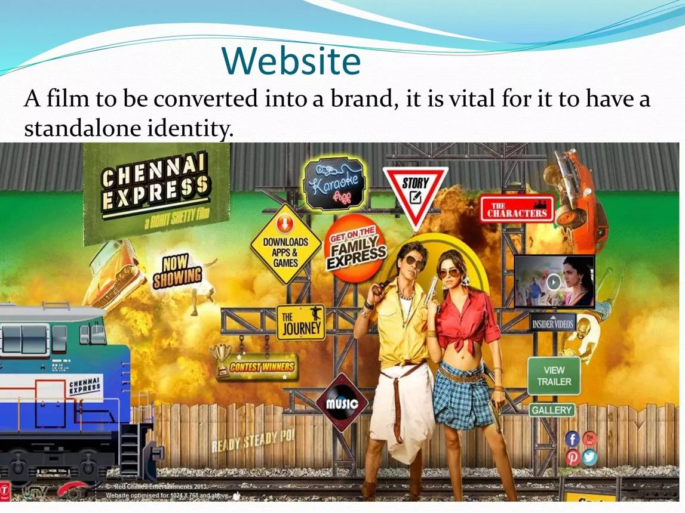

Part II · The First Digital Empire Starts With…, 2000 to 2013 · 15 of 57
Chapter 13 · Two Playbooks, One King
Two campaigns, two years apart, run by the same strategist for the same star. They are usually told as one success. They were two different ideas. (Analysis)

The Chennai Express website, from the campaign's social-media strategy deck. (Image: Final Thesis archive)
| Ra.One, 2011 | Chennai Express, 2013 | |
|---|---|---|
| The idea | Build a universe | Build a movement |
| The hero of the campaign | A character, G.One | The audience |
| What the fan did | Bought, played, collected | Tweeted, moved, unlocked, sang, chose |
| The engine | Licensing, games, merchandise, brand partners | Social listening, daily recalibration, hashtags per milestone |
| Its proof | National and Filmfare awards for effects; marketing awards | 1 billion+ impressions; 750,000+ tweets; trending 10+ days |
| Worldwide gross | more than ₹207 crore | ₹396 crore to ₹425 crore |
| What it left behind | A character with no second chapter | A model the industry then walked away from |
(Fact for the figures, as sourced in Chapters 10 and 12; the descriptive rows are Analysis)
The first playbook treated the fan as a market for a world someone else had built. The second treated the fan as the engine of the campaign itself. Together they draw a line from SRKWorld in 2000 to the question this book ends on: what happens when the fans build the world themselves? (Analysis)
By August 2013 the man who had put his own life online in 2000, built a superhero universe and a train that ran on tweets had the biggest film in the history of Hindi cinema and an audience that had learned to play. The next five years would ask why he stopped reading from his own playbook.
What each playbook cost, and what it kept. Ra.One ran for about nine months on a reported marketing budget of ₹52 crore. Chennai Express ran for 90 days; this book has found no published marketing budget for it, so that figure is N/A. (Fact, as sourced in Chapters 10 and 12) Ra.One’s reported marketing budget equals about a quarter of its worldwide gross: ₹52 crore against more than ₹207 crore. (This book’s arithmetic) The first playbook spent money to build assets the studio owned: a game, a comic, toys, a style guide. The second spent attention the audience gave freely, on platforms the studio did not own. (Analysis)
Three lessons the two leave together. First, a universe needs a second chapter more than a bigger first one: Ra.One had the assets and no sequel. Second, a movement needs a home that outlives its hashtags: Chennai Express had the participation and no permanent place to keep it. Third, the two halves were never joined: a world the fans could own and an audience that drives it. That join is the gap the rest of this book keeps returning to, and the one Part IX tries to fill. (Analysis)
From the Final Thesis
Added from the Final Thesis, word for word. Where a figure here differs from the sourced figure earlier in this chapter, the chapter’s figure stands; see Addendum B.
The Bollywood digital flywheel
Creates a world fans want to enter.
Games, stories, challenges and participation.
Creates, shares, competes and brings in new audiences.
Informs further experiences, products and storytelling.
A continuing ecosystem—not a one-time release campaign.
This is the model against which the next five years should be examined.
Not because every film needed to become a technology experiment.
But because two of Khan’s major campaigns had already demonstrated the creative and commercial possibilities of making the audience an active component of the entertainment product.
And then came the apparent retreat.
(Final Thesis, section 31)
The question the industry should have asked
By 2013, the ingredients were visible:
- An established celebrity with a large digital audience.
- An intellectual property that could be extended into games, products, and stories.
- Brand partners willing to contribute distribution and marketing resources.
- Fan communities with their own networks and cultural influence.
- Analytics capable of measuring activity and informing decisions.
What would happen if these ingredients were developed into a permanent fan-powered platform, rather than reassembled for each film?
That is the question this study carries forward.
(Final Thesis, section 43)
Phase I — 2011–2013
The digital layer could become a product in its own right: a game, a character, a digital service, a fan activity, or an interactive experience. The campaign was designed to give people something to do, not just something to watch.
The Chennai Express case study describes technology as an enabler, with creative strategy, audience insight, and real-time adaptation working together.
(Final Thesis, section 7)
2012 — Don 2 and Jab Tak Hai Jaan: Two different relationships with the audience
The following year presented a contrast.
Don 2 extended an established character-led franchise through trailers, digital content and international promotion. Its marketing drew upon the recognisability of Don and the appeal of a continuing cinematic identity.
Jab Tak Hai Jaan, by contrast, relied more heavily on the traditional emotional vocabulary of a major Hindi romantic drama: its stars, music, romance, publicity and the enduring association between Shah Rukh Khan and the romantic hero.
These were not competing definitions of success. They were different commercial models.
One treated a character as a continuing entertainment property. The other drew upon a cultural relationship between an actor and an audience that had developed over decades.
The lesson was that Khan’s appeal was not confined to one genre, one character or one promotional technique.
He could sell a universe. He could sell a love story. And he could bring both to a global audience.
The next year would reveal what happened when the digital universe and the emotional power of fandom were combined.
(Final Thesis, section 20)